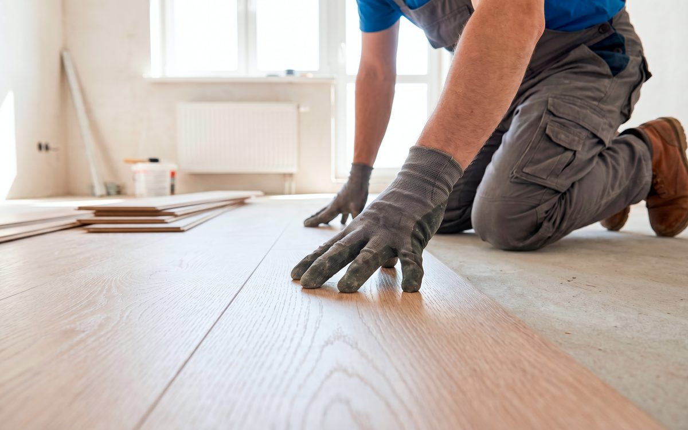
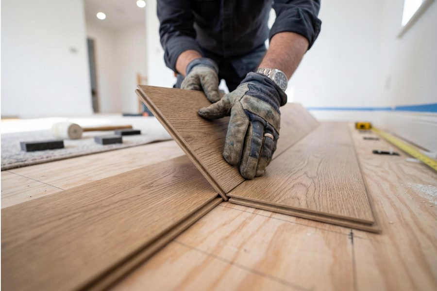
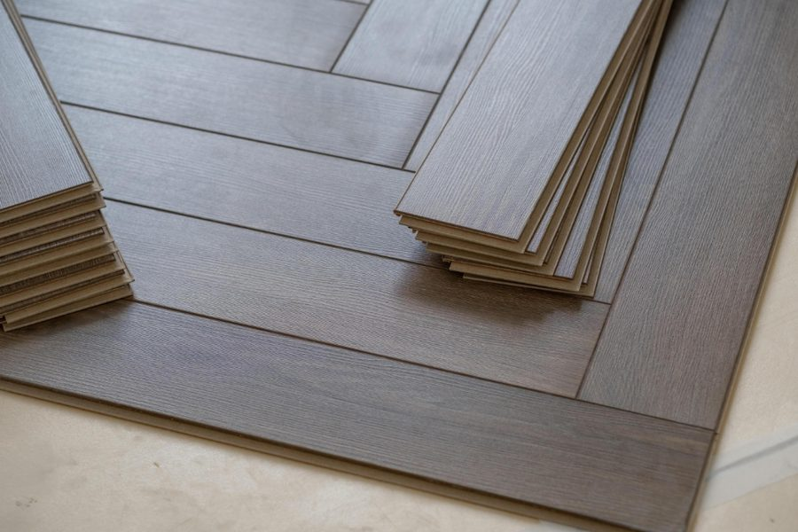

The wood look at a friendly price.

Laminate gives you the look of wood or stone at a more affordable price. A durable printed top layer resists scratches and everyday wear, and click-together planks make for a clean, quick installation.


Sweep or vacuum often and mop with a lightly damp mop. Wipe up spills promptly, since standing water can damage the seams. Use felt pads under furniture.
Standard laminate is water-resistant, not waterproof. Some newer products are rated waterproof, and we can point you to those for areas with more moisture.
Laminate has a wood-fiber core and is more sensitive to standing water. Vinyl plank has a waterproof core. Laminate is often a little more budget-friendly.
Often yes, if the existing floor is flat, clean, and dry. We check the subfloor during your estimate.
Call or email to get a quote.